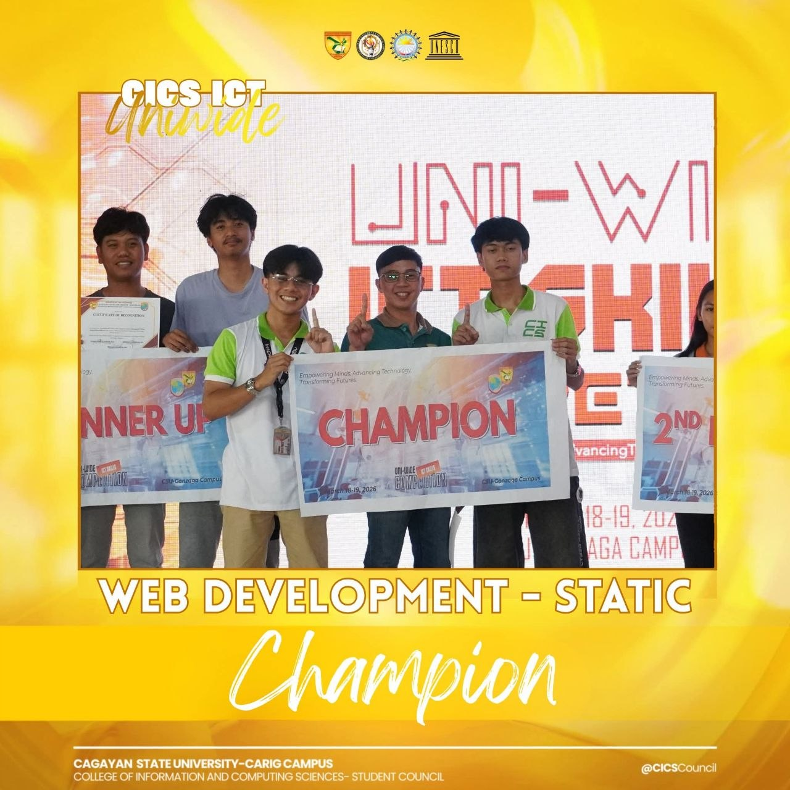

Building innovative, functional, and user-friendly digital experiences — one line of code at a time.
About Me
Transforming ideas into digital experiences
Hello, I'm
Jotham Den M. Baquiran
I am a Bachelor of Science in Information Technology student with a passion for building purposeful digital solutions. I thrive at the intersection of design and engineering — crafting interfaces that are both beautiful and robust.
11
Total Projects
7
Certificates
3
Years Experience
MY JOURNEY
WHY I CHOSE CSU CARIG
I chose CSU Carig Campus because pursuing a Bachelor of Science in Information Technology has always been my passion. It is the only school in my area that offers this program, making it the best opportunity for me to follow my goals. I believe this institution provides the foundation, knowledge, and environment I need to grow and succeed in the field of technology.
MY FRESHMAN JOURNEY
My first year as a BSIT student was full of adjustments and new experiences. I was introduced to the fundamentals of programming, basic computer operations, and different areas of information technology. At first, everything felt overwhelming, especially learning how to code and understand technical concepts. However, as time passed, I slowly developed confidence and started enjoying the process of solving problems. This year built my foundation and helped me realize that I am on the right path.


What I've Earned
Best Project Award
Received recognition for developing a fully functional web system that improved efficiency and user experience.
Open Doors
A BSIT degree unlocks pathways across the entire technology landscape — from crafting interfaces to securing infrastructure. Explore where the degree can take you.
// HOVER TO PAUSE · DRAG TO SLIDE
The Hard Parts
Subjects that tested my limits — logged like breach attempts on a firewall.
ITC - Binary Computation
Binary computation felt like learning a completely different language. Converting numbers into endless patterns of 1s and 0s constantly confused me, and even a small mistake in a single bit could completely change the result.
Art Appreciation
Art appreciation challenged me in ways I didn't expect. Interpreting meanings behind paintings, styles, and symbolism often left me unsure if I was seeing the deeper message or missing the point entirely.
National Service Training Program
NSTP tested my discipline more than anything. Waking up early in the morning just to attend the activities felt like fighting my own system reboot every weekend.
My BSIT Story
Four perspectives on what it truly means to walk the path of a Bachelor of Science in Information Technology student.
What I Think About BSIT
> eval --subject "Bachelor of Science in IT"
BSIT is one of the most relevant and forward-thinking programs you can take today. It bridges the gap between theoretical knowledge and real-world application — covering everything from software development to network infrastructure. What I admire most about it is how broad yet purposeful the curriculum is. Every subject feels like a building block toward becoming a complete technology professional. Choosing this program was not just an academic decision — it was a commitment to becoming someone who can shape the digital world.
What's Fun in BSIT
> query --filter "enjoyable_moments"
The most exciting part of BSIT is that you get to build things — actual, working things. Writing your first program that runs, designing a database that stores real data, or configuring a network that actually connects — there is a rush to it that never gets old. Every lab session feels like a puzzle, and solving it gives a satisfaction that no other academic experience has matched for me.
The Hard Parts
> breach_scan --target "student_struggles"
Being a BSIT student is not easy. The workload is relentless — coding assignments, research papers, laboratory outputs, and technical exams often collide at the same time. There are nights where the screen blurs and the logic simply refuses to click. But these hard moments are exactly what builds resilience.
The Future of BSIT
> forecast --scope "academic + industry"
The future of BSIT is luminous. Academically, I see the program evolving to integrate AI, cybersecurity, and cloud computing more deeply into its core subjects. In the tech industry, BSIT graduates are already filling critical roles in software engineering, systems administration, and digital transformation. BSIT is not just a degree — it is a launchpad into a future that is being written in code right now.
Contact Me
Got a question? Send me a message and I'll get back to you.
Try the temporary comment section — enter your name, write a message, and click Post Comment. Nice site!